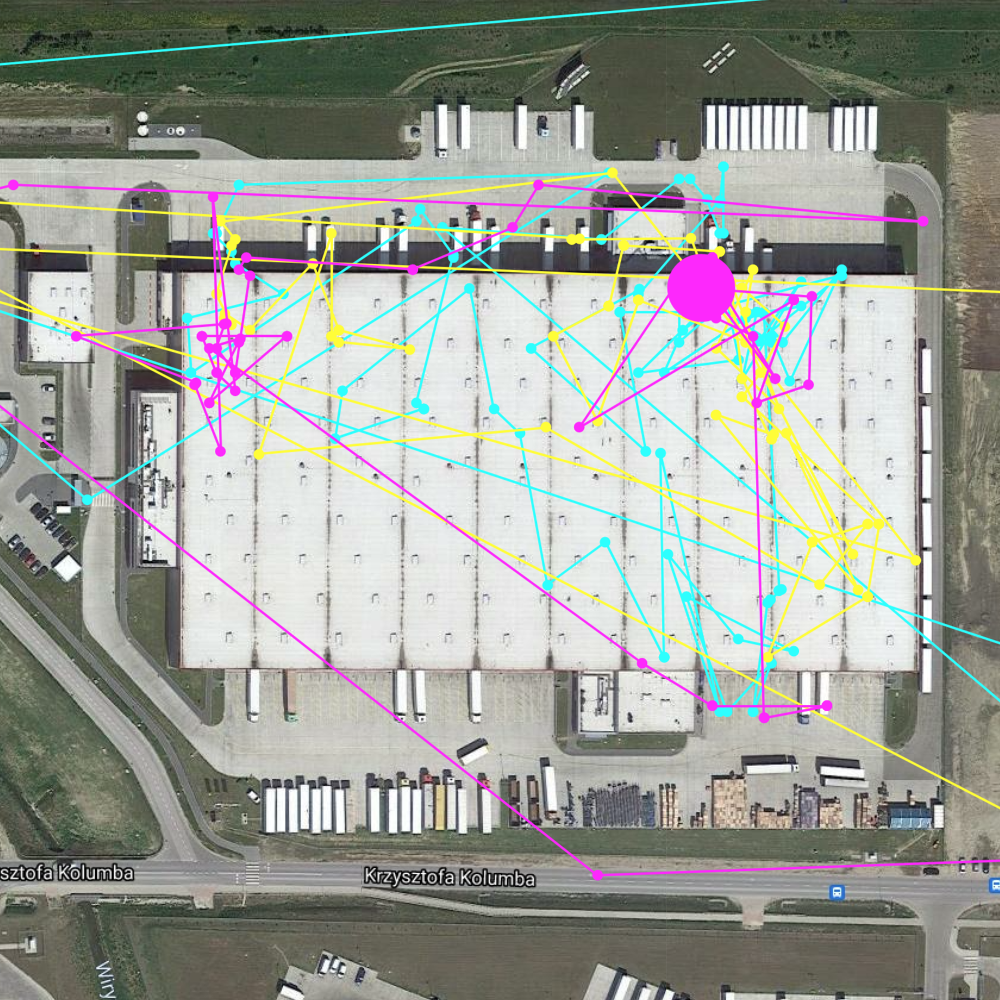
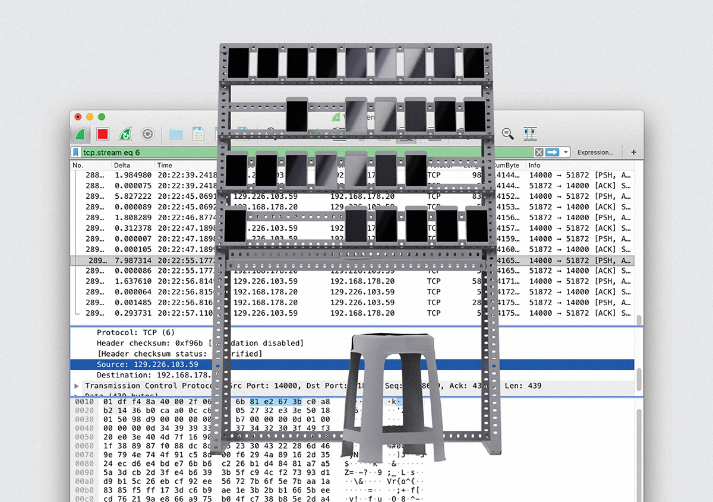
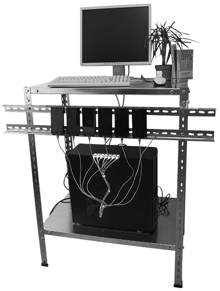

Conrad Weise is a Cologne/Cluj based artist and researcher. In his work he looks at socio-political settings where he locates computation and its implications. Through investigative and computational approaches from within these systems, his works attempt to contextualise the intransparent and uncertain arrangements. His current research focuses in particular on the hidden labour and automated engagement within computational systems.
-
2021
-
Return
A research project designed for the experimental disclosure and artistic investigation of Amazon's retour infrastructure with an interest to dissolve its information asymmetry and reveal the spatial workings of the company. ↬ www
-
<-- human-driven condition
Reflects on the hidden labour within computational systems and locates the simulated engagement of group control systems within surveillance capitalism as a subversion to it. This work finds great inspiration within the field of digital anthropology and takes a cultural approach: it treats the lived experiences of people involved in the production of automated engagement and group control systems as the subject for theorising the complicated structures of contemporary digital capital. ↬ www
2020
-
Slide to Unlock (2007-)

Reflects on the performative conditioning of interfaces (and its users) and explores information asymmetry as a shared standard. The installation is a spatial representation of Apple’s original slide to unlock user interface element. ↬ www
-
Group control system -- the entreprecariat object
Looks at the concept of work and employment in the age of the internet with focusing on the growing entanglement of entrepreneurialism and new shapes of the precariat. Through analyzing the phenomenon of group control systems within the discourse of interface cultures a specific type of engagement towards work becomes visible. ↬ entreprecariat-object.git
2019
-
Turing Test
Performs a standard Turing test via establishing a conversation with the exhibition visitor and an Amazon mechanical turk worker—creating a connection between the fauxtomation and socio-political implications of machine learning. ↬ turing-test.git ↬ slides ↬ recording
Exhibited at:
— Meta Marathon, 2020
— Künstlerhaus Dortmund, 2019 -
CAPTCHA (Completely Automated Public Turnstile to tell Computers and Humans Apart)
Performative installation which questions while entering an exhibition space: Is the current space physical or digital? Are these actions public or private? Are you a human or a (ro)bot? ↬ captcha.git
Exhibited at:
— iteration #1, 2020
— Künstlerhaus Dortmund, 2019 -
Translation of Computation

Since the beginning of computation it’s physicality has become increasingly smaller and since Gordon Moore’s famous prediction computation became almost transparent. In today's information age, it is easy to forget about the socio-political presence of software, when algorithms are used by the local police to predict where next crimes will happen, huge logistic warehouses are organized by the machine’s preferences and hype technologies consume more electricity than entire countries.
While these computational systems are often camouflaged as being objective or neutral, the underlying processes are anything but. At the core software development is about the interpretation of inclusion and exclusion.
This work looks at the origin and manifestation of computation and how it is reinforcing highly rational ways of thinking, which do not integrate into the complex world around us. ↬ translation.pdf translation-of-computation.git -
Topology of Computation
Since the beginning of computation it’s physicality has become increasingly smaller and since Gordon Moore’s famous prediction computation became almost transparent. In today's information age, it is easy to forget about the physical presence of software, when user interfaces blend completely into their environment, fiber-optic cables lay deep in the pacific, and almost everything is stored in the cloud.
For now the incomprehensible world of computation was reduced to the inner workings of integrated circuits or machines. But with spaces like Amazon fulfillment centers its rationality and opaqueness is mapped onto our physical space.
This work places computation in the center of the architectural and spatial discourse and explores how computation is actively structuring physical and relational space. ↬ topology.pdf
2018
-
self

Synchronizes different camera inputs based on human pose estimation w/ @tensorflow ↬ self.git
Exhibited at:
— Medien-Materialitäten, 2019
— European Cultural Centre, Biennale 2018
— KISDparcours, 2018
2017
-
perfom I/O

Provides a way to interactively and critically examine the reinforcement of our opinions and how we contribute to conversations.